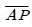
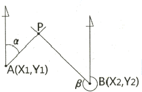
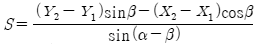
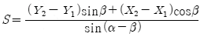
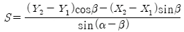
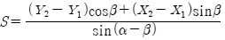
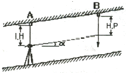

지적산업기사 (2018-03-04 기출문제)
1과목: 지적측량
1. 지적도근점측량을 배각법으로 실시한 결과, 도선의 수평거리 총합계가 3427.23 m인 경우 종선과 횡선오차에 대한 공차는? (단, 축척은 1200분의 1이며, 1등도선이다.)(오류 신고가 접수된 문제입니다. 반드시 정답과 해설을 확인하시기 바랍니다.)
- 0.58 m
- 0.65 m
- 0.70 m
- 0.79 m
(정답률: 59%)

2. 지번 및 지목을 제도할 때 지번과 지목의 글자 간격은 글자크기의 어느 정도를 띄어서 제도하는가?
- 글자크기의 1/2
- 글자크기의 1/3
- 글자크기의 1/4
- 글자크기의 1/5
(정답률: 84%)
3. 다각망도선법으로 지적도근점측량을 할 때의 기준으로 옳은 것은?
- 2점 이상의 기지점을 포함한 폐합다각방식에 의한다.
- 2점 이상의 기지점을 포함한 결합다각방식에 의한다.
- 3점 이상의 기지점을 포함한 폐합다각방식에 의한다.
- 3점 이상의 기지점을 포함한 결합다각방식에 의한다.
(정답률: 76%)
4. 다음 중 지적확정측량과 직접 관계가 없는 것은?
- 행정구역계 결정
- 건물의 위치 확인
- 필지별 경계점 측정
- 지구계 또는 가구계 측정
(정답률: 61%)
5. 방위각법에 의한 지적도근점측량 계산에서 종선 및 횡선오차의 배분 방법은? (단, 연결오차가 허용범위 이내인 경우)
- 측선장에 비례 배분한다.
- 측선장에 역비례 배분한다.
- 종횡선차에 비례 배분한다.
- 종횡선차에 역비례 배분한다.
(정답률: 70%)
6. EDM(Electromagnetic Distance Measurements)에서 영점보정에 대한 의미로 옳은 것은? (단, 연결오차가 허용범위 이내인 경우)
- 지구곡률 보정
- 대기굴절 보정
- 관측값에 대한 온도 보정
- 기계중심과 측점간의 불일치 조정
(정답률: 69%)
7. 경위의측량방법에 따른 지적삼각보조점의 수평각 관측 방법으로 옳은 것은?
- 3배각 관측법
- 2대회의 방향관측법
- 3대회의 방향관측법
- 방위각에 의한 관측법
(정답률: 75%)
8. 지적삼각점측량 시 구성하는 망으로, 하천, 노선 등과 같이 폭이 좁고 거리가 긴 지역에 사용하는 삼각망으로 옳은 것은?
- 사각망
- 삼각쇄
- 삽입망
- 유심다각망
(정답률: 72%)
9. 표준길이보다 6cm가 짧은 100m 줄자로 측정한 거리가 650m이었다면 실제거리는?
- 649.0 m
- 649.6 m
- 650.4 m
- 651.0 m
(정답률: 76%)
10. 임야도에 등록하는 도곽선의 폭은?
- 0.1 mm
- 0.2 mm
- 0.3 mm
- 0.5 mm
(정답률: 70%)
11. 평판측량법으로 광파조준의를 사용하여 세부측량을 하는 경우 방향선의 최대 도상길이는?
- 10 cm
- 15 cm
- 20 cm
- 30 cm
(정답률: 71%)
12. 다각망도선법에 따른 지적도근점의 각도관측을 할 때, 배각법에 따르는 경우 1등도선의 폐색오차 범위는? (단, 폐색변을 포함한 변의 수는 12이다.)
- ± 65초 이내
- ± 67초 이내
- ± 69초 이내
- ± 73초 이내
(정답률: 81%)
13. 지적측량 계산 시 끝수처리의 원칙을 적용할 수 없는 것은?
- 면적의 결정
- 방위각의 결정
- 연결교차의 결정
- 종횡선수치의 결정
(정답률: 55%)
14. 평판측량에서 오차 발생의 원인 중 가장 주의를 요하는 것은?
- 구심오차
- 시준오차
- 외심오차
- 표정오차
(정답률: 68%)
15. 평판측량방법에 의하여 망원경조준의(망원경 앨리데이드)로 측정한 값이 경사거리가 100m, 연직각이 10° 20 ' 30“일 경우 수평거리는?
- 98.28 m
- 98.34 m
- 98.38 m
- 98.44 m
(정답률: 71%)
16. 축척 1200분의 1 지적도 시행지역에서 전자면적측정기로 도상에서 2회 측정한 값이 270.5m2, 275.5m2 이었을 때 그 교차는 얼마 이하여야 하는가?
- 10.4 m2
- 13.4 m2
- 17.3 m2
- 24.3 m2
(정답률: 53%)
17. 다음 중 지적측량에 관한 설명으로 옳지 않은 것은?
- 경계점을 지상에 복원하는 경우 지적측량을 하여야 한다.
- 조본원점과 고초원점의 평면직각 종횡선수치의 단위는 간(間)으로 한다.
- 지적측량의 방법 및 절차 등에 필요한 사항은 국토교통부령으로 정한다.
- 특별소삼각측량지역에 분포된 소삼각 측량지역은 별도의 원점을 사용할 수 있다.
(정답률: 71%)
18. 다음 중 지적삼각보조점표지의 점간거리는 평균 얼마를 기준으로 하여 설치하여야 하는 가? (단, 다각망도선법에 따르는 경우는 고려하지 않는다.)
- 0.5km 이상 1km 이하
- 1km 이상 3km 이하
- 2km 이상 4km 이하
- 3km 이상 5km 이하
(정답률: 73%)
19. 평판측량방법으로 거리를 측정하여 도곽선이 줄어든 경우 실측거리의 보정방법으로 옳은 것은?
- 실측거리에서 보정량을 뺀다.
- 실측거리에서 보정량을 곱한다.
- 실측거리에서 보정량을 나눈다.
- 실측거리에서 보정량을 더한다.
(정답률: 72%)
20. 점 A(X1,Y1)를 지나고 방위각이 α인 직선과 점 B(X2,Y2)를 지나고 방위각이 β인 직선이 점 P에서 교차하는 경우

의 거리(S)를 구하는 식으로 옳은 것은?




(정답률: 58%)
2과목: 응용측량
21. 측량의 기준에서 지오이드에 대한 설명으로 옳은 것은?
- 수준원점과 같은 높이로 가상된 지구타원체를 말한다.
- 육지의 표면으로 지구의 물리적인 형태를 말한다.
- 육지와 바다 밑까지 포함한 지형의 표면을 말한다.
- 정지된 평균해수면이 지구를 둘러쌌다고 가상한 곡면을 말한다.
(정답률: 66%)
22. 터널측량, 노선측량, 하천측량과 같이 폭이 좁고, 거리가 긴 지역의 측량에 적합하며 거리에 비하여 측점 수가 적어 정확도가 낮은 삼각망은?
- 사변형삼각망
- 유심다각망
- 단열삼각망
- 개방삼각망
(정답률: 48%)
23. 축척 1:5000의 항공사진을 촬영고도 1000m에서 촬영하였다면 사진의 초점거리는?
- 200 mm
- 210 mm
- 250 mm
- 500 mm
(정답률: 54%)
24. 직접수준측량에서 기계고를 구하는 식으로 옳은 것은?
- 기계고 = 지반고 – 후시
- 기계고 = 지반고 + 후시
- 기계고 = 지반고 – 전시 – 후시
- 기계고 = 지반고 + 전시 – 후시
(정답률: 66%)
25. 경사거리가 50m인 경사터널에서 수평각을 관측한 시준선에서 직각으로 5mm의 시준오차가 생겼다면 각에 미치는 오차는?
- 21“
- 30“
- 35“
- 41“
(정답률: 51%)
26. 노선의 곡선에서 수평곡선으로 주로 사용되지 않는 곡선은?
- 복심곡선
- 단곡선
- 2차곡선
- 반향곡선
(정답률: 60%)
27. 등고선의 성질에 대한 설명으로 옳지 않은 것은?
- 동일 등고선 위의 모든 점은 기준면으로부터 모두 동일한 높이이다.
- 경사가 같은 지표에서는 등고선의 간격은 동일하며 평행하다.
- 등고선의 간격이 좁을수록 경사가 완만한 지형을 의미한다.
- 등고선은 절벽 또는 동굴에서는 교차할 수 있다.
(정답률: 79%)
28. GNSS 측량을 구성하고 있는 3부분(segment)에 해당되지 않는 것은?
- 사용자부분
- 궤도부분
- 제어부분
- 우주부분
(정답률: 67%)
29. GNSS 측량에서 위치를 결정하는 기하학적인 원리는?
- 위성에 의한 평균계산법
- 위성기점 무선항법에 의한 후방교회법
- 수신기에 의하여 처리하는 망평균계산법
- GPS에 의한 폐합 도선법
(정답률: 54%)
30. 사진측량에서 고저차(h)와 시차차(Δp)의 관계로 옳은 것은?
- 고저차는 시차차에 비례한다.
- 고저차는 시차차에 반비례한다.
- 고저차는 시차차의 제곱에 비례한다.
- 고저차는 시차차의 제곱에 반비례한다.
(정답률: 54%)
31. 두 변의 길이가 각각 38m와 42m이고 그 사이각이 50°14 ' 45“ 인 밑면과 높이 7m인 삼각기둥의 부피(m3)는?
- 3994.7 m3
- 4028.7 m3
- 4119.5 m3
- 4294.5 m3
(정답률: 55%)
32. 그림과 같이 터널 내의 천장에 측점이 설치되어 있을 때 두 점의 고저차는? (단, I.H=1.20m, H.P=1.82m, 사거리=45m, 연직각 α=15°30′)

- 11.41 m
- 12.65 m
- 13.10 m
- 15.50 m
(정답률: 62%)
33. 축척 1:500 지형도를 이용하여 축척 1:3000의 지형도를 제작하고자 한다. 같은 크기의 축척 1:3000 지형도를 만들기 위해 필요한 1:500 지형도의 매수는?
- 36매
- 38매
- 40매
- 42매
(정답률: 73%)
34. A점의 지반고가 15.4m, B점의 지반고가 18.9m일 때 A점으로부터 지반고가 17m인 지점까지의 수평거리는? (단, AB간의 수평거리는 45m이고, 등경사 지형이다.)
- 17.3m
- 18.3m
- 19.3m
- 20.6m
(정답률: 54%)
35. 항공삼각측량시 사진을 기본단위로 사용하여 절대좌표를 구하며 정확도가 가장 양호하고 조정 능력이 높은 방법은?
- 광속 조정법
- 독립 모델 조정법
- 스트립 조정법
- 다항식 조정법
(정답률: 58%)
36. 사진측량의 특징에 대한 설명으로 옳지 않은 것은?
- 측량의 정확도가 균일하다.
- 축척변경이 용이하며 시간적 변화를 포함하는 4차원 측량도 가능하다.
- 정량적, 정성적 해석이 가능하며 접근하기 어려운 대상물도 측정 가능하다.
- 촬영 대상물에 대한 판독 및 식별이 항상 용이하여 별도의 측량을 필요로 하지 않는다.
(정답률: 72%)
37. 수준측량에서 전시, 후시를 같게 하여 제거할 수 있는 오차는?
- 기포관측과 시준선이 평행하지 않을 때
- 관측자의 읽기착오에 의한 오차
- 지반의 침하에 의한 오차
- 표척의 눈금 오차
(정답률: 47%)
38. GNSS 측량의 정지측량 방법에 관한 설명으로 옳지 않은 것은?
- 관측시간 중 전원(밧데리)부족에 문제가 없도록 하여야 한다.
- 기선결정을 위한 경우에는 두 측점간의 시통이 잘 되어야 한다.
- 충분한 시간동안 수신이 이루어져야 한다.
- GNSS 측량 방법 중 후처리 방식에 속한다.
(정답률: 58%)
39. 원곡선 설치에서 교각 I=70°, 반지름 R=100m일 때 접선길이는?
- 50.0m
- 70.0m
- 86.6m
- 259.8m
(정답률: 76%)
40. 도로의 직선과 원곡선 사이에 곡률을 서서히 증가시켜 넣는 곡선은?
- 복심곡선
- 반향곡선
- 완화곡선
- 머리핀곡선
(정답률: 78%)
3과목: 토지정보체계론
41. 토지정보를 공간자료와 속성자료로 분류할 때, 공간자료에 해당하는 것으로만 나열된 것은?
- 지적도, 임야도
- 지적도, 토지대장
- 토지대장, 임야대장
- 토지대장, 공유지연명부
(정답률: 77%)
42. 다음 중 LIS(Land Information System)와 관련이 없는 것은?
- UIS(Urban Information System)
- DIS(Defense Information System)
- GIS(Geographic Information System)
- EIS(Environmental Information System)
(정답률: 67%)
43. 국가공간정보정책 기본계획은 몇 년 단위로 수립·시행되는가?
- 1년
- 3년
- 5년
- 10년
(정답률: 73%)
44. 토지관리정보시스템(LMIS)에 관한 설명으로 옳지 않은 것은?
- 과거 건설교통부에서 추진하였던 정보화 사업이다.
- 구축하는 도형자료에는 지형도, 연속 및 편집지적도, 용도지역지구도 등이 있다.
- 시·군·구에서 생산 관리하는 도형자료와 속성자료 중 도형정보의 질을 제고하기 위한 시스템이다.
- 자료를 공유하여 업무의 효율성을 높이고, 개인 소유의 토지에 대한 공적 규제사항을 신속·정확하게 알려주기 위하여 구축하였다.
(정답률: 55%)
45. 다음 중 래스터데이터가 갖는 장점으로 옳지 않은 것은?
- 중첩분석이 용이하다.
- 데이터 구조가 단순하다.
- 위상관계를 나타낼 수 있다.
- 원격탐사 영상 자료와의 연계가 용이하다.
(정답률: 70%)
46. 다음 중 토지정보의 종류로 옳지 않은 것은?
- 위치정보
- 속성정보
- 도형정보
- 오차정보
(정답률: 74%)
47. 토지의 고유번호 구성에서 지번의 총 자리수는?
- 6자리
- 8자리
- 10자리
- 12자리
(정답률: 63%)
48. 다음 중 스캐닝(Scanning)에 의하여 도형정보를 입력할 경우의 장점으로 옳지 않은 것은?
- 작업자의 수작업이 최소화된다.
- 이미지상에서 삭제·수정할 수 있다.
- 원본 도면의 손상된 정도와 상관없이 도면을 정확하게 입력할 수 있다.
- 복잡한 도면을 입력할 때 작업시간을 단축할 수 있다.
(정답률: 72%)
49. 다음 중 GIS 데이터 교환 표준이 아닌 것은?
- NTF
- SQL
- SDTS
- DIGEST
(정답률: 48%)
50. 공간 데이터의 질을 평가하는 기준과 가장 거리가 먼 것은?
- 위치 정확성
- 속성 정확성
- 논리적 일관성
- 데이터의 경제성
(정답률: 68%)
51. 지적도 전산화 작업의 목적으로 옳지 않은 것은?
- 수치지형도의 위조 방지
- 대민서비스의 질적 향상 도모
- 토지정보시스템의 기초 데이터 활용
- 지적도면의 신축으로 인한 원형 보관관리의 어려움 해소
(정답률: 61%)
52. 관계형 데이터베이스에 대한 설명으로 옳은 것은?
- 데이터를 2차원의 테이블 형태로 저장한다.
- 정의된 데이터 테이블의 갱신이 어려운 편이다.
- 트리(Tree) 형태의 계층 구조로 데이터들을 구성한다.
- 필요한 정보를 추출하기 위한 질의의 형태에 많은 제한을 받는다.
(정답률: 47%)
53. 지적정보관리시스템의 사용자권한등록파일에 등록하는 사용자권한으로 옳지 않은 것은?
- 지적통계의 관리
- 종합부동산세 입력 및 수정
- 토지 관련 정책정보의 관리
- 개인별 토지소유현황의 조회
(정답률: 62%)
54. 지적행정시스템의 속성자료와 관련이 없는 것은?
- 토지대장
- 임야대장
- 공유지연명부
- 국세과세대장
(정답률: 75%)
55. 토지정보체계의 도형자료를 컴퓨터에 입력하는 방식과 관련이 없는 것은?
- 스캐닝
- 좌표변환
- 디지타이징
- 항공사진 디지타이징
(정답률: 70%)
56. 디지타이징 방식과 비교하였을 때 스캐닝 방식이 갖는 장점에 대한 설명으로 옳지 않은 것은?
- 일반적으로 작업의 속도가 빠르다.
- 다량의 지도를 입력하는 작업에 유리하다.
- 하드웨어와 소프트웨어의 구입비용이 덜 소요된다.
- 작업자의 숙련도가 작업에 미치는 영향이 적은 편이다.
(정답률: 70%)
57. 부동산종합공부시스템 운영기관의 장이 지적전산자료의 유지·관리 업무를 원활히 수행하기 위하여 지정하는 지적전산자료관리 책임관은?
- 보수업무 담당부서의 장
- 전산업무 담당부서의 장
- 지적업무 담당부서의 장
- 유지·관리업무 담당부서의 장
(정답률: 55%)
58. 지리정보시스템에서 실세계를 추상화시켜 표현하는 과정을 데이터모델링이라 하며, 이와 같이 실세계의 지리공간을 GIS의 데이터베이스로 구축하는 과정은 추상화수준에 따라 세 가지 단계로 나누어진다. 이 세 가지 단계에 포함되지 않는 것은?
- 개념적 모델
- 논리적 모델
- 물리적 모델
- 위상적 모델
(정답률: 62%)
59. DEM과 TIN에 관한 설명으로 옳은 것은?
- 불규칙한 적응적 추출방법인 DEM은 복잡한 지형에 알맞다.
- 정사사진 생성과 같은 목적을 위해서는 DEM데이터가 훨씬 효과적이다.
- DEM과 TIN모델은 상호변환이 불가능하므로 처음 구축할 때부터 선택에 신중을 가해야 한다.
- 항공사진을 해석도화하는 방법으로 수치지형데이터를 획득하는 경우 DEM 생성보다 TIN 생성이 더 쉽다.
(정답률: 44%)
60. 래스터데이터 구조에 비하여 벡터데이터 구조가 갖는 단점으로 옳은 것은?
- 자료의 구조가 복잡한 편이다.
- 네트워크분석과 같은 다양한 공간 분석에 제약이 있다.
- 해상도가 높을 경우 더욱 많은 저장 용량을 필요로 한다.
- 각 셀이 코드화되기 때문에 많은 저장용량을 필요로 한다.
(정답률: 61%)
4과목: 지적학
61. 지목설정의 원칙 중 옳지 않은 것은?
- 1필1목의 원칙
- 용도경중의 원칙
- 축척종대의 원칙
- 주지목추종의 원칙
(정답률: 67%)
62. 부동산의 증명제도에 대한 설명으로 옳지 않은 것은?(오류 신고가 접수된 문제입니다. 반드시 정답과 해설을 확인하시기 바랍니다.)
- 근대적 등기제도에 해당한다.
- 소유권에 한하여 그 계약 내용을 인증해주는 제도였다.
- 증명은 대한제국에서 일제초기에 이르는 부동산등기의 일종이다.
- 일본인이 우리나라에서 제한거리를 넘어서도 토지를 소유할 수 있는 근거가 되었다.
(정답률: 43%)
63. 우리나라 근대적 지적제도의 확립을 촉진시킨 여건에 해당 되지 않는 것은?
- 토지에 대한 문건의 미비
- 토지소유형태의 합리성 결여
- 토지면적 단위의 통일성 결여
- 토지가치 판단을 위한 자료부족
(정답률: 53%)
64. 다음 중 토렌스시스템의 기본원리에 해당되지 않는 것은?
- 거울이론
- 배상이론
- 보험이론
- 커튼이론
(정답률: 80%)
65. 현대 지적의 원리로 가장 거리가 먼 것은?
- 능률성
- 문화성
- 정확성
- 공기능성
(정답률: 72%)
66. 지적 관련 법령의 변천 순서가 옳게 나열된 것은?
- 토지대장법 → 조선지세령 → 토지조사령 →지세령
- 토지대장법 → 토지조사령 → 조선지세령 →지세령
- 토지조사법 → 지세령 → 토지조사령 → 조선지세령
- 토지조사법 → 토지조사령 → 지세령 → 조선지세령
(정답률: 65%)
67. 다음 중 지적공부의 성격이 다른 것은?
- 산토지대장
- 갑호토지대장
- 별책토지대장
- 을호토지대장
(정답률: 56%)
68. 지번부여지역에 해당하는 것은?
- 군
- 읍
- 면
- 동·리
(정답률: 80%)
69. 다음 중 지적의 발생설과 관계가 먼 것은?
- 법률설
- 과세설
- 치수설
- 지배설
(정답률: 62%)
70. 지적업무의 특성으로 볼 수 없는 것은?
- 전국적으로 획일성을 요하는 기술업무
- 전통성과 영속성을 가진 국가 고유업무
- 토지소유권을 확정공시하는 준사법적인 행정업무
- 토지에 대한 관리관계를 등록하는 등기의 보완적업무
(정답률: 44%)
71. 다음 중 지적제도의 분류 방법이 다른 하나는?
- 세지적
- 법지적
- 수치지적
- 다목적지적
(정답률: 71%)
72. 징발된 토지소유권의 주체는?
- 국가
- 국방부
- 토지소유자
- 지방자치단체
(정답률: 67%)
73. 다음 토지이동 항목 중 면적측정 대상에서 제외되는 것은?
- 등록전환
- 신규등록
- 지목변경
- 축척변경
(정답률: 64%)
74. 지번의 부여 방법 중 진행방향에 따른 분류가 아닌 것은?
- 기우식
- 사행식
- 오결식
- 절충식
(정답률: 68%)
75. 다음 중 정약용과 서유구가 주장한 양전개정론의 내용이 아닌 것은?
- 경무법 시행
- 결부제 폐지
- 어린도법 시행
- 수등이척제 개선
(정답률: 59%)
76. 다음 중 임야조사사업 당시 사정기관은?
- 도지사
- 임야심사위원회
- 임시토지조사국
- 고등토지조사위원회
(정답률: 55%)
77. 지적제도의 발달과정에서 세지적이 표방하는 가장 중요한 특징은?
- 면적 본위
- 위치 본위
- 소유권 본위
- 대축척 지적도
(정답률: 57%)
78. 다음 중 축척이 다른 2개의 도면에 동일한 필지의 경계가 각각 등록되어 있을 때 토지의 경계를 결정하는 원칙으로 옳은 것은?
- 축척이 큰 것에 따른다.
- 축척의 평균치에 따른다.
- 축척이 작은 것에 따른다.
- 토지소유자에게 유리한 쪽에 따른다.
(정답률: 78%)
79. 지적공부를 상시 비치하고 누구나 열람할 수 있게 하는 공개주의의 이론적 근거가 되는 것은?
- 공신의 원칙
- 공시의 원칙
- 공증의 원칙
- 직권등록의 원칙
(정답률: 81%)
80. 토지대장을 열람하여 얻을 수 있는 정보가 아닌 것은?
- 토지경계
- 토지면적
- 토지소재
- 토지지번
(정답률: 58%)
5과목: 지적관계
81. 지적측량업의 등록을 위한 기술능력 및 장비의 기준으로 옳지 않은 것은?
- 출력장치 1대 이상
- 중급기술자 2명 이상
- 토탈스테이션 1대 이상
- 특급기술자 2명 또는 고급기술자 1명 이상
(정답률: 70%)
82. 공간정보의 구축 및 관리 등에 관한 법령상 지적측량수수료를 결정하여 고시하는 자는?
- 기획재정부장관
- 국토교통부장관
- 행정안전부장관
- 한국국토정보공사 사장
(정답률: 65%)
83. 공간정보의 구축 및 관리 등에 관한 법령상 신규등록 신청 시 지적소관청에 제출하여야 하는 첨부 서류가 아닌 것은?
- 지적측량성과도
- 법원의 확정판결서 정본 또는 사본
- 소유권을 증명할 수 있는 서류의 사본
- 「공유수면 관리 및 매립에 관한 법률」에 따른 준공검사 확인증 사본
(정답률: 60%)
84. 다음 지목의 분류에서 암석지의 지목으로 옳은 것은?
- 유지
- 임야
- 잡종지
- 전
(정답률: 62%)
85. 공간정보의 구축 및 관리 등에 관한 법령상 지적기준점에 해당하지 않는 것은?
- 위성기준점
- 지적도근점
- 지적삼각점
- 지적삼각보조점
(정답률: 67%)
86. 면적을 측정하는 경우 도곽선의 길이에 얼마이상의 신축이 있을 때에 이를 보정하여야 하는가?
- 0.4mm
- 0.5mm
- 0.8mm
- 1.0mm
(정답률: 61%)
87. 공간정보의 구축 및 관리 등에 관한 법령상 지적공부의 열람·발급 시 지적소관청에서 교부하는 등본 대상이 아닌 것은?
- 결번대장
- 임야대장
- 토지대장
- 경계점좌표등록부
(정답률: 60%)
88. 신규등록할 토지가 발생한 경우 최대 며칠 이내에 지적소관청에 신규등록을 신청하여야하는가?
- 15일
- 30일
- 60일
- 90일
(정답률: 50%)
89. 지적재조사에 관한 특별법령상 지적소관청이 사업지구 지정고시를 한 날부터 일필지조사 및 지적재조사측량을 시행하여야 하는 기간은?
- 6개월 이내
- 1년 이내
- 2년 이내
- 3년 이내
(정답률: 43%)
90. 공간정보의 구축 및 관리 등에 관한 법령상 정당한 사유 없이 지적측량을 방해한 자에 대한 벌칙 기준으로 옳은 것은?
- 300만원 이하의 과태료
- 500만원 이하의 과태료
- 1년 이하의 징역 또는 1천만원 이하의 벌금
- 2년 이하의 징역 또는 2천만원 이하의 벌금
(정답률: 60%)
91. 부동산종합공부시스템 운영 및 관리규정상 토지의 고유번호 코드의 총 자리수는?
- 13자리
- 15자리
- 19자리
- 22자리
(정답률: 78%)
92. 국토교통부장관이 기본측량을 실시하기 위하여 필요하다고 인정하는 경우, 토지의 수용 또는 사용에 따른 손실보상에 관하여 적용하는 법률은?
- 부동산등기법
- 국토의 계획 및 이용에 관한 법률
- 공간정보의 구축 및 관리 등에 관한 법률
- 공익사업을 위한 토지 등의 취득 및 보상에 관한 법률
(정답률: 49%)
93. 공간정보의 구축 및 관리 등에 관한 법령상 지적측량의뢰인이 손해배상금으로 보험금을 지급받고자 하는 경우의 첨부 서류에 해당되는 것은?
- 공정증서
- 인낙조서
- 조정조서
- 화해조서
(정답률: 58%)
94. 공간정보의 구축 및 관리 등에 관한 법령상 「도시개발법」에 따른 도시개발사업의 착수·변경 또는 완료 사실의 신고는 그 사유가 발생한 날부터 최대 며칠 이내에 하여야 하는가?
- 7일 이내
- 15일 이내
- 30일 이내
- 60일 이내
(정답률: 41%)
95. 지적업무처리규정상 일람도의 제도방법에 대한 설명으로 옳지 않은 것은?
- 철도용지는 붉은색 0.2mm 폭의 2선으로 제도한다.
- 인접 동·리 명칭은 4mm, 그 밖의 행정구역의 명칭은 5mm의 크기로 한다.
- 취락지·건물 등은 0.1mm의 폭으로 제도하고 그 내부를 검은색으로 엷게 채색한다.
- 도곽선은 0.1mm의 폭으로, 도곽선 수치는 3mm 크기의 아라비아 숫자로 제도한다.
(정답률: 42%)
96. 다음 토지이동 중 축척의 변경이 수반되는 토지이동은?
- 등록전환
- 신규등록
- 지목변경
- 합병
(정답률: 60%)
97. 공간정보의 구축 및 관리 등에 관한 법령상 지상 경계점에 경계점표지를 설치한 후 측량할 수 있는 경우가 아닌 것은?
- 관계 법령에 따라 인가·허가 등을 받아 토지를 분할하려는 경우
- 토지 일부에 대한 지상권설정을 목적으로 분할하고자 하려는 경우
- 토지이용상 불합리한 지상 경계를 시정하기 위하여 토지를 분할하려는 경우
- 도시개발사업의 사업시행자가 사업지구의 경계를 결정하기 위하여 토지를 분할하려는 경우
(정답률: 52%)
98. 공간정보의 구축 및 관리 등에 관한 법률에서 규정하는 경계에 대한 설명으로 옳지 않은 것은?
- 지적도에 등록한 선
- 임야도에 등록한 선
- 지상에 설치한 경계표지
- 필지별로 경계점들을 직선으로 연결하여 지적공부에 등록한 선
(정답률: 61%)
99. 공간정보의 구축 및 관리 등에 관한 법령상 지적도면과 경계점좌표등록부에 공통으로 등록하여야 하는 사항은? (단, 그 밖에 국토교통부령으로 정하는 사항은 제외한다.)
- 경계, 좌표
- 지번, 지목
- 토지의 소재, 지번
- 토지의 고유번호, 경계
(정답률: 59%)
100. 공간정보의 구축 및 관리 등에 관한 법률에 따른 '토지의 표시'가 아닌 것은?
- 경계
- 소유자의 주소
- 좌표
- 토지의 소재
(정답률: 69%)
먼저, 수평거리 총합계를 축척에 맞게 변환해야 합니다. 축척이 1200분의 1이므로, 1m를 도면상에서 1200mm로 나타낼 수 있습니다. 따라서 수평거리 총합계인 3427.23m를 1200으로 나누어 2.856mm로 변환합니다.
이제 종선과 횡선의 오차를 구할 수 있습니다. 예를 들어, 종선의 경우 도면상의 세로축으로부터의 거리가 10mm이고, 실제 거리는 10.5m일 때, 오차는 10.5m - 10mm × 1200분의 1 = 10.5m - 12mm = 10.488m입니다. 이와 같은 방식으로 모든 종선과 횡선의 오차를 계산하고, 이들의 합을 구합니다.
이 문제에서는 공차를 구하는 것이므로, 종선과 횡선의 오차 합을 도면상의 거리로 변환한 후, 이를 종선과 횡선의 개수로 나누어 평균 오차를 구합니다. 예를 들어, 종선과 횡선의 오차 합이 100mm이고, 종선과 횡선의 개수가 각각 50개일 때, 평균 오차는 100mm ÷ (50 + 50) = 1mm입니다.
이 문제에서는 평균 오차를 축척에 맞게 변환한 후, 보기 중에서 가장 가까운 값으로 반올림하여 정답을 구하라고 하였습니다. 따라서, 평균 오차 1mm를 1200으로 나누어 0.833mm로 변환한 후, 가장 가까운 값인 0.70m으로 반올림하여 정답으로 선택합니다.